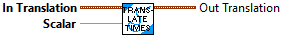

Constructs a Translation2d with the X and Y components equal to the provided values.
Represents a translation in 2d space. This object can be used to represent a point or a vector.
This assumes that you are using conventional mathematical axes. When the robot is placed on the origin, facing toward the X direction, moving forward increases the X, whereas moving to the left increases the Y.
Parameters:
- X - The x component of the translation.
- Y - The y component of the translation.
Returns
- TRANSLATION - The TRANSLATION data structure

Constructs a Translation2d with the provided distance and angle. This is essentially converting from polar coordinates to Cartesian coordinates.
Represents a translation in 2d space. This object can be used to represent a point or a vector.
This assumes that you are using conventional mathematical axes. When the robot is placed on the origin, facing toward the X direction, moving forward increases the X, whereas moving to the left increases the Y.
Parameters:
- Dist - Distance.
- Ang - Rotation representing the angle.
Returns
- TRANSLATION - The TRANSLATION data structure

Divides the translation by a scalar and returns the new translation.
Parameters:
- In Translation - This translation data structure
- scalar - The value to divide the translation by
Result:
- Out Translation - The resulting translation

Checks equality between this Translation2d and another object.
Parameters:
- IN TRANSLATION - This TRANSLATION data structure
- OTHER TRANSLATION - The other TRANSLATION data structure
Returns:
- EQUALS - Value is set to TRUE if the two TRANSLATIONS are equal.

Returns the angle this translation forms with the positive X axis.
Parameters:
- IN TRANSLATION2d - This TRANSLATION2 data structure
Returns:
- Angle -- The angle of the translation (Radians)

Calculates the distance between two translations in 2d space.
This function uses the pythagorean theorem to calculate the distance. distance = sqrt((x2 - x1)^2 + (y2 - y1)^2)
Parameters:
- IN TRANSLATION - This TRANSLATION data structure
- OTHER TRANSLATION - The translation to compute the distance to.
Returns:
- Distance - The distance between the two translations.

Returns the norm, or distance from the origin to the translation.
Parameters:
- IN TRANSLATION - This translation data structure
Returns:
- Norm - The norm of the translation.

Returns the X component of the translation.
Parameters
- IN Translation - This Translation data structure
Returns:
- X- The x component of the translation.

Returns the X and Ycomponents of the translation.
Parameters
- IN Translation - This Translation data structure
Returns:
- X- The X component of the translation.
- Y- The Y component of the translation.

Returns the Y component of the translation.
Parameters
- IN Translation - This Translation data structure
Returns:
- Y- The Y component of the translation.

Inerpolate between this and an End Value translation
Parameters:
- IN Translation - This translation data structure
- EndValue Translation - The translation data structure
Returns
- Interpolated Translation - The interpolated translation.

Subtracts the other translation from the other translation and returns the difference.
For example, Translation2d{5.0, 4.0} - Translation2d{1.0, 2.0} = Translation2d{4.0, 2.0}
Parameters:
- IN Translation - This translation data structure
- other Translation - The translation data structure to subtract
Returns
- Out Translation - The difference between the two translations.

Adds two translations in 2d space and returns the sum. This is similar to vector addition.
For example, Translation2d{1.0, 2.5} + Translation2d{2.0, 5.5} = Translation2d{3.0, 8.0}
Parameters:
- IN Translation - This translation data structure
- other Translation - The translation data structure to add
Returns
- Out Translation - The summation of the two translations.

Applies a rotation to the translation in 2d space.
This multiplies the translation vector by a counterclockwise rotation matrix of the given angle.
[x_new] [other.cos, -other.sin][x]
[y_new] = [other.sin, other.cos][y]
For example, rotating a Translation2d of {2, 0} by 90 degrees will return a Translation2d of {0, 2}.
Parameters:
- In Translation - This data structure
- Other Rotation - The rotation to rotate the translation by.
Returns:
- Out Translation - The resulting Translation data structure

Multiplies the translation by a scalar and returns the new translation.
For example, Translation2d{2.0, 2.5} * 2 = Translation2d{4.0, 5.0}
Parameters:
- In Translation - This translation data structure
- scalar - The value to multiply the translation by
Result:
- Out Translation - The resulting translation

Returns the inverse of the current translation. This is equivalent to rotating by 180 degrees, flipping the point over both axes, or simply negating both components of the translation.
Parameters:
- In Translation - This translation data structure
Result:
- Out Translation - The inverse of the current translation.